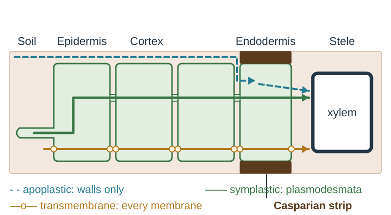
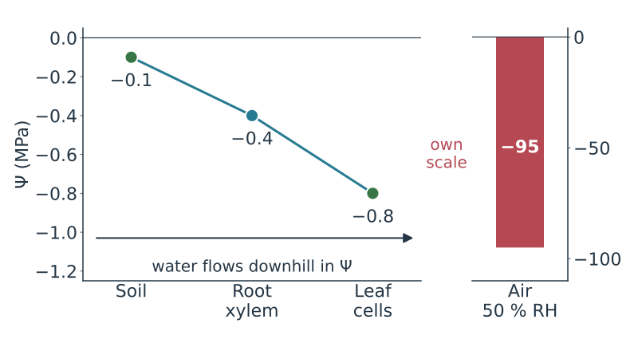
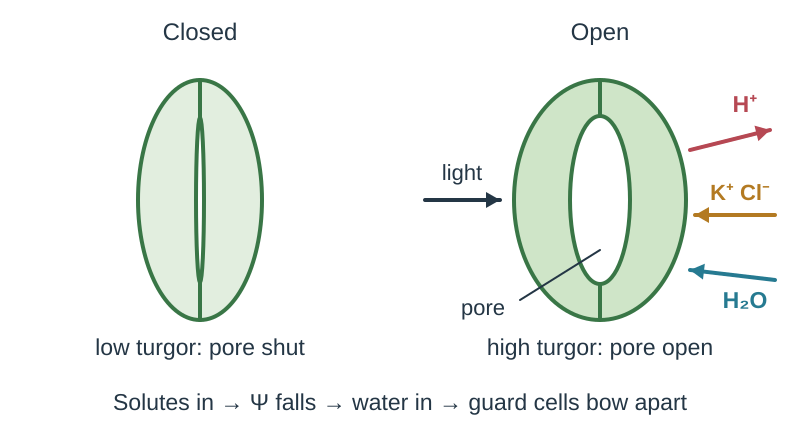

Week 7 — How water and minerals enter and move through a plant
Animal and Plant Physiology
About this lecture
The tallest living tree, a coast redwood, is 115 m high. Water climbs from its roots to its top leaves every day, and there is no heart anywhere in the tree. Yet a tomato plant standing in wet, salty soil can wilt as if the soil were dry. What moves water through a plant, and why does wet soil not guarantee water? In P1 we built the plant: walled cells with turgor, apoplast and symplast, root hairs and endodermis, xylem and stomata. Today we make water and minerals flow through it.
Water potential: one quantity, Ψ, that predicts the direction of water movement, and how to calculate it.
Into the root: three routes, the endodermis, and the energy cost of taking up ions.
Up the xylem: cohesion–tension, driven by evaporation from the leaf.
Out of the leaf: measuring transpiration, and how stomata regulate it.
Minerals: which elements a plant needs, what they do, and partners in the soil.
The problem: water in, water out
A plant loses ~500 water molecules for every CO₂ molecule it fixes. Of the water taken up, ~97 % evaporates from the leaves.
A maize plant transpires ~200 L over a growing season.
Water travels up to 100 m from soil to leaf, far beyond the reach of diffusion (A1: ~7 h for 1 cm).
So, as in an animal, long distances need bulk flow. But the plant has no pump.
Water is available in the soil. How does it cross the root to reach the xylem?
Into the root: three routes and one barrier
Apoplastic: through cell walls and spaces; crosses no membrane.
Symplastic: cytoplasm to cytoplasm through plasmodesmata.
Transmembrane: across the plasma membrane (and tonoplast) of each successive cell.
At the endodermis, the Casparian strip (suberin, with lignin) in the radial and transverse walls blocks the apoplast.

Every water molecule and ion entering the xylem has passed a membrane at least once. That membrane decides what gets in.
Crossing the membrane: water is passive, ions cost energy
Water
Moves through aquaporins: channels that raise membrane permeability.
Always passive, down the Ψ gradient. No ATP pumps water.
Ions
Plasma-membrane H⁺-ATPase uses ATP to pump H⁺ out: apoplast pH ~5.5, cytosol ~7.3, membrane potential −120 to −200 mV.
Channels let ions move down this gradient (K⁺ in).
H⁺-coupled carriers use H⁺ flowing back in to move ions against their own gradient (NO₃⁻, H₂PO₄⁻): secondary active transport.
Waterlogged roots: wet but starving
Water fills the soil pores.
Little O₂ reaches the roots.
Aerobic respiration falls: less ATP.
H⁺-ATPase slows; the H⁺ gradient declines.
Less H⁺-coupled uptake of mineral ions.
Now the water is in the xylem. What lifts it 100 m?
Soil to air: a gradient of Ψ
Soil → root → xylem → leaf cells → evaporation from mesophyll walls → air through the stomata.
Each step is downhill in Ψ: water moves passively the whole way.
The biggest drop is from leaf to air: air at 50 % relative humidity has Ψ ≈ −95 MPa.
The energy comes from evaporation at the leaf, ultimately from the sun. The plant spends no ATP moving water.

How does evaporation in a leaf pull on water in the roots?
Cohesion–tension
Water evaporates from mesophyll walls; the curved water surfaces in the wall pores pull on the water behind them.
This tension (−1 to −2 MPa in a tall tree) is transmitted down the continuous water column by cohesion (hydrogen bonds between water molecules) and adhesion to the conduit walls.
Lignified wall thickenings stop the conduits collapsing under tension (P1).
K⁺ enters through inward-rectifying channels; Cl⁻ is taken up and malate made, balancing the charge.
Guard-cell Ψs and Ψ fall.
Water enters by osmosis.
Turgor rises; radial microfibrils make the guard cells bow apart and the pore opens.

Guard-cell K⁺ can rise from ~100 to ~400–800 mM during opening.
Opening is the default in light. What makes stomata close?
Signals that open and close stomata
Signal
Response
Blue light at dawn
open
Low intercellular CO₂
open
High intercellular CO₂
close
Increased ABA
close
Low leaf Ψ (drought)
close
Abscisic acid (ABA), the drought hormone, made in roots and leaves:
ABA binds receptors in the guard cells.
Anion channels open; Cl⁻ and malate leave.
The membrane depolarises.
K⁺ leaves through outward-rectifying channels.
Guard-cell Ψs and Ψ rise; water leaves.
Turgor falls and the pore closes.
ABA is a signal: it changes ion channels, it does not plug the pore. Closing saves water but stops CO₂ uptake.
Try it: soil to air
Essential elements
An element is essential if the plant cannot complete its life cycle without it, or it is part of an essential molecule, and no other element can replace it.
Macronutrients
Typical % of dry mass
Micronutrients
Typical mg kg⁻¹ dry mass
N
1.5
Fe
100
K
1.0
Mn
50
Ca
0.5
Zn
20
Mg
0.2
B
20
P
0.2
Cu
6
S
0.1
Mo
0.1
“Macro” and “micro” refer to the amount needed, not to importance: without 0.1 mg kg⁻¹ of Mo the plant dies just as surely.
C, H and O come from CO₂ and water.
What does each element do, and how do you recognise a deficiency?
Roles of elements and where symptoms appear
Element
Main role
Mobile in phloem?
First symptoms
N
amino acids, proteins, nucleotides, chlorophyll
yes
yellowing of old leaves
P
ATP, nucleic acids, phospholipids
yes
old leaves, dark or purple
K
main osmotic cation, e.g. in guard cells; enzyme activation
yes
old leaf margins
Mg
central atom of chlorophyll
yes
yellowing between veins, old leaves
Fe
cytochromes and Fe–S proteins in electron transport
no
yellowing of young leaves
Ca
cell walls (pectin), signalling
no
young leaves, tips
Where the symptoms appear tells you which group the missing element is in.
Reading a deficiency: old or young leaves?
A mobile element (N, P, K, Mg) is withdrawn from old leaves to supply new growth, so old leaves show symptoms first.
An immobile element (Fe, Ca) stays where it was deposited, so young leaves, which depend on current uptake, show symptoms first.
The photo: Mg deficiency in maize. Yellow stripes between the veins of older leaves; the veins stay green longest.
Carbon pays for water and mineral uptake. Where does that carbon come from?
Summary
Concept
Key fact
Water potential
Ψ = Ψs + Ψp; pure water = 0 MPa; water moves to lower (more negative) Ψ
Solute potential
Ψs = −cRT, c in osmol L⁻¹; 0.1 M NaCl → −0.50 MPa at 25 °C
Turgor and plasmolysis
water enters until Ψ inside = Ψ outside; Ψp ≥ 0 in living cells
Saline soil
low soil Ψ can draw water out of roots in wet soil
Root routes
apoplastic, symplastic, transmembrane; Casparian strip blocks the apoplast
Ion uptake
H⁺-ATPase builds the gradient; channels and H⁺-coupled carriers use it
Cohesion–tension
evaporation creates tension; cohesion transmits it; no pump
Transpiration
units mmol H₂O m⁻² s⁻¹; rises with low humidity, heat, wind
Stomata
light → H⁺-ATPase → K⁺ in → water in → open; ABA → ions out → close
Minerals
macro/micro by amount; mobile elements show symptoms in old leaves
Next (P3 — Light, carbon and the whole-plant budget): the open stomata let CO₂ in. How does the leaf use light to turn CO₂ into sugar, how do some plants fix carbon while losing less water, and how does sugar reach the root?